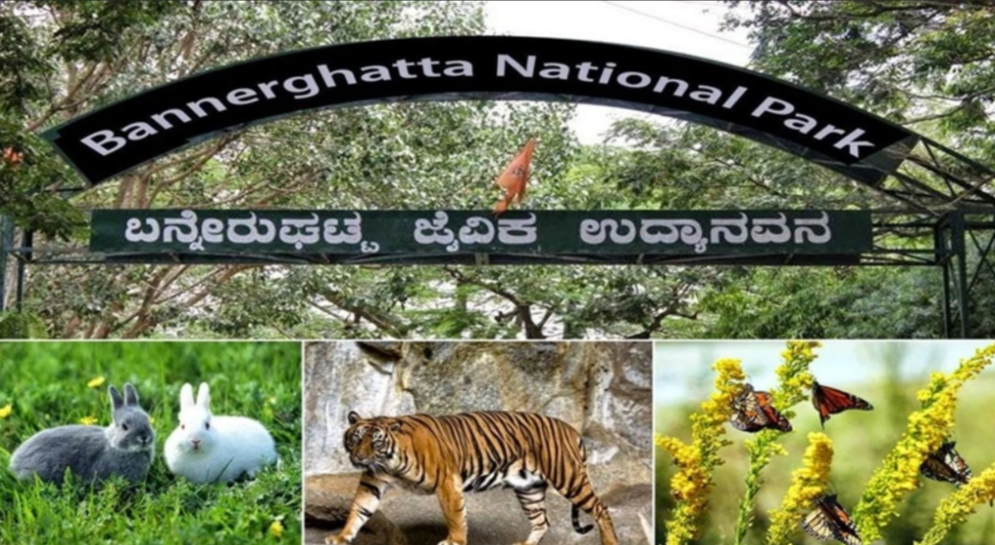
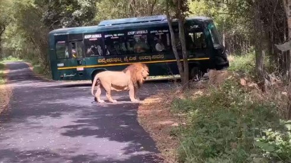
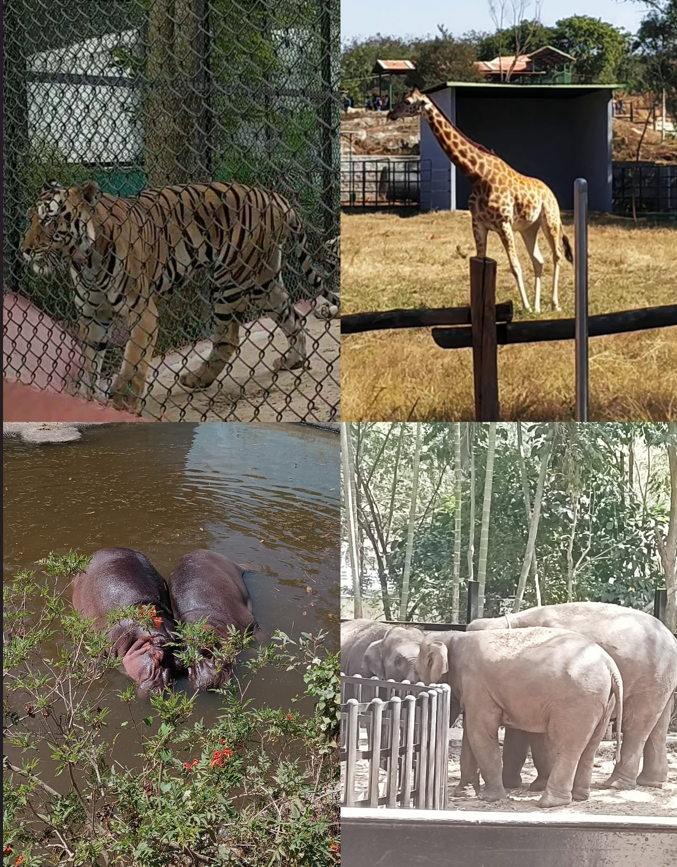

Bannerghatta National Park is a national park in India, located In Bengaluru and Ramanagara District, Karnataka.
It was founded in 1970 and declared as a national park in 1974.
In 2002, A small portion of the park became a zoological garden, the Bannerghatta Biological Park.

The 65,127.5 acre (260.51 km2) national park is located about 22 km south of Bangalore in the hills of the Anekal range with an elevation of 1245 - 1634m.
The park has a hilly terrain of granite sheets under moist deciduous forest valleys and scrubland on higher areas.
The park is part of a wildlife corridor for elephants which connects the BR Hills and the Sathyamangalam forest.
The park is contiguous with Talli reserve forest in the southeast and Bilikal forest in the south.

There are 1941 individual animals belonging to 94 different species.
Most prominent and interesting ones are Thamin deer, Hog deer, King Cobra, Crocodiles, Himalayan black bear, panthers and various birds.
The Bannerughatta National Park also offers Diffrent kinds of Safaries such as Herbivores Safari, Beer Safari, Lion Safari & Tiger Safari.
This National Reserve Forest And Zoo Authority are innvolved in Protecting the Endangered Species And maintaining the ecological Balance.